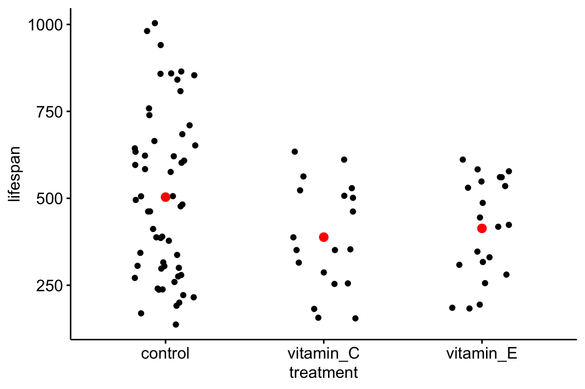

Chapter 9 P-values
9.1 \(p\)-values
| contrast | estimate | SE | df | lower.CL | upper.CL | t.ratio | p.value |
|---|---|---|---|---|---|---|---|
| vitamin_E - control | -89.9 | 52 | 93 | -194.1 | 14.3 | -1.7 | 0.090 |
| vitamin_C - control | -115.1 | 54 | 93 | -223.2 | -6.9 | -2.1 | 0.037 |
| vitamin_C - vitamin_E | -25.2 | 65 | 93 | -154.1 | 103.8 | -0.4 | 0.699 |
Let’s use the vole data to introduce the \(p\)-value. The table above gives a SE, \(t\) and \(p\)-value for each pairwise contrast among the three treatment levels. A typical report (one with several misconceptions) might read
“We found a significant effect of Vitamin C (\(t=\) -2.1, \(p=\) 0.037) on lifespan, but no effect of vitamin E (\(t=\) -1.7, \(p=\) 0.09) on lifespan.”
A \(p\) value is a continuous measure of evidence against the null. As long as the data approximate the assumptions of the null hypothesis pretty well, a very small \(p\)-value, such as 0.002 or 0.0005, is pretty good evidence against the null hypothesis – but does not mean “an effect exists”. To show an effect exists, we should have small \(p\)-values in multiple replicates and we should rigorously probe the hypothesis with different experiments that challenge the hypothesis in different ways. A small \(p\) is evidence for a research program to move forward with replication and probing. A big \(p\)-value, say 0.22 or 0.76, is pretty weak evidence against the null, but does not mean “there is no effect.” If an experiment is well designed, a big \(p\) could suggest abandoning any hypotheses that predict biologically consequential effects. Unfortunately, a big \(p\) could also reflect a weak experimental design. Between small and big \(p\) values, such as 0.009 or 0.011, problems arise. These intermediate \(p\)-values beg for replication. A major problem of inference using \(p\) values is that there is no sharp boundaries between these three regions. Instead biologists typically use the \(p < 0.05\) as a sharp boundary to declare that an effect exists or not.
Okay. so what is a \(p\)-value? When we do a \(t\)-test, we get a \(p\)-value. There are several ways to think about this probability. The most compact way is \(P(data | null)\), which is literally read as the probability of the data given the null (or “conditional” on the null), but is really short for the probability of the data, or something more extreme than the data, given that the null hypothesis is true. The “probability of the data” is kinda vague. More specifically, we mean the probability of some statistic about the data such as the difference in means between group A and group B or the \(t\)-value associated with this difference. So, a bit more formally, the probability returned in a \(t\)-test is \(\mathrm{prob}(t \ge t_{obs} | H_0)\). This is the long run frequency of observing a \(t\)-value as big or bigger than the observed \(t\)-value (the one you actually got with your data) if the null is true. Let’s parse this into “long run frequency of observing a \(t\)-value as big or bigger than the observed \(t\)-value” and “null is true”.
A thought experiment: You open a google sheet and insert 12 standard, normal random deviates (so the true mean is zero and the true variance is one) in Column A, rows 1-12. You arbitrarily assign the first six values (rows 1-6) to treatment A and the second six values (rows 7-12) to treatment B. You use the space immediately below these data to compute the mean of treatment A, the mean of treatment B, the difference in means (A - B), and a \(t\)-value. Unfortunately, google sheets doesn’t have a \(t\)-value function so you’d have to compute this yourself. Or not, since this is a thought experiment. Now ``fill right’’ or copy and paste these functions into 999 new columns. You now have 1000 \(t\) tests. The expected value of the difference in means is zero (why?) but the actual values will form a normal distribution about zero. Most will be close to zero (either in the negative or positive direction) but some will be further from zero. The expected \(t\)-value will also be zero (why?) and the distribution of these 1000 \(t\) values will look normal but the tails are a little fuller. This row of \(t\) values is a null distribution, because in generating the data we used the exact same formula for the values assigned to A and the values assigned to B. Now think of a \(t\)-value in your head, say 0.72 (remember that \(t\) values will largely range from about -3 to +3 although the theoretical range is \(-\infty\) to \(+\infty\). What is the probability of observing a \(t\) of 0.72 or bigger if the null is true? Look at the row of \(t\)-values! Count the number of \(t \ge 0.72\) and then divide by the total number of \(t\)-values in the row (1000) and you have a probability computed as a frequency. But remember the frequentist definition is the long run frequency, or the expected frequency at the limit (when you’ve generated not 1000 or even 1,000,000 but an infinite number of columns and \(t\)-values).
Some asides to the thought experiment: First, why “as big or bigger” and not just the probability of the value itself? The reason is that the probability of finding the exact \(t\) is 1/infinity, which doesn’t do us much good. So instead we compute the probability of finding \(t\) as big, or bigger, than our observed \(t\). Second, the \(t\)-test probability described above is a “one-tail probability”. Because a difference can be both in the positive direction and the negative direction, we usually want to count all the \(t \ge 0.72\) and the \(t \le -0.72\) and then add these two counts to compute the frequency of as extreme or more extreme values. This is called a “two-tailed probability” because we find extremes at both tails of the distribution. Third, we don’t really count \(t \ge 0.72\) but take advantage of the beautiful mathematical properties of the theoretical \(t\) distribution, which allows us to compute the frequentist probability (expected long range frequency) given the \(t\)-value and the degrees of freedom using the \(t\)-distribution.
Now what do I mean with the phrase “null is true”? Most people equate “null is true” with ``no difference in means’’ but the phrase entails much more than this. Effectively, the phrase means that the \(p\)-value is based on modeling the real data with a theoretical sample in which all the points were randomly sampled from the same distribution and that the assignment of the individual points to treatment was random. This model means the theoretical sample has three properties: First, random assignment to treatment after sampling from the same distribution means that the expected means are the same, or put differently, the expected difference in means between the assigned groups is zero. Second, random assignment to treatment after sampling from the same distribution also means that the expected variances of the two groups are equal. And third, random sampling means that the values of each point are independent – we cannot predict the value of one point knowing information about any other point. Here is what is super important about this: if we get a really low \(p\)-value, any one of these consequences may be untrue about our data, for example it could be that the true means of the two treatment groups really are different, or it could mean it is the variances that differ between the two groups, or it could mean that the data (or technically, the errors) are not independent of each other. This is why we need certain assumptions to make a \(p\)-value meaningful for empirical data. By assuming independent error and homogenous (equal) variances in our two samples, a low \(p\) value is evidence of unequal means.
9.2 Creating a null distribution.
Let’s repeat: A pretty good definition of a \(p\)-value is: the long-run frequency of observing a test-statistic as large or larger than the observed statistic, if the null were true. A more succinct way to state this is
\[\begin{equation} p = \mathrm{prob}(t \ge t_o | H_o) \end{equation}\]where \(t\) is a hypothetically sampled \(t\)-value from a null distribution, \(t_o\) is the observed \(t\)-value, and \(H_o\) is the null hypothesis. Part of the null hypothesis is the expected value of the parameter estimated is usually (but not always) zero – this can be called the nil null. For example, if there is no vitamin E effect on lifespan, then the expected difference between the means of the control and vitamin E treatment levels is zero. Or,
\[\begin{equation} \mathrm{E}(\bar{vitamin_E} - \bar{control} | H_o) = 0.0 \end{equation}\]let’s plot the data and look at the group means. Below is a strip chart of the vole data with superimposed treatment level means, using the function ggstripchart from the ggpubr package (can you make this?). I’m going to refer to this kind of chart as a “dot plot”, which is what most biology researchers call this type of chart.

9.2.1 the Null Distribution
The mean lifespan in the vitamin_E treatment is -89.9 days shorter than the mean lifespan in the control treatment. And, the mean lifespan in the vitamin_E treatment is -115.1 days shorter than the mean lifespan in the control treatment. These are the measured effects, or the observed differences in means. How confident are we in these effects? Certainly, if the researchers did the experiment with two control treatment groups, they would measure some difference in their means simply because of finite sampling (more specifically, the many, many random effects that contribute to lifespan will differ between the two control groups). So let’s reframe the question: are the observed differences unusually large compared to a distribution of differences that would occur if there were no effect? That is, if the ``null were true’’. To answer this, we compare our observed difference to this null distribution. This comparison gives the probability (a long-run frequency) of “sampling” a random difference from the null distribution of differences that is as large, or larger, than the observed difference.
What is a null distribution? It is the distribution of a statistic (such as a difference in means, or better, a \(t\)-value) if the null were true. Here, I am generating a null distribution that is relevant to the cold vole data. See if you can understand the script before reading the explanation below.
seed <- 1
n_iter <- 10^5 # number of iterations
mu <- mean(vole[treatment=='control', lifespan])
sigma <- sd(vole[treatment=='control', lifespan])
n <- nrow((vole[treatment=='control',]))
sample1 <- matrix(rnorm(n*n_iter, mean=mu, sd=sigma), nrow=n) # 100,000 samples (each size n)
sample2 <- matrix(rnorm(n*n_iter, mean=mu, sd=sigma), nrow=n) # 100,000 samples
null_dis <- apply(sample2, 2, mean) - apply(sample1, 2, mean)
qplot(null_dis)
Figure 9.1: Null distribution for an infinitely large data set that looks curiously like the lifespans of the cold-rear voles from the control treatment.
What have we done above? We’ve simulated an infinitely large population of voles that have a distribution of lifespans similar to that of the cold-reared voles assigned to the control group. The mean \(\mu\) and standard deviation \(\sigma\) of the simulated lifespan are equal to the observed mean and standard deviation of the lifespans of the control voles. Then, the script:
- randomly sample 56 values from this population of simulated lifespans and assign to sample1. We sample 56 values because that is the sample size of our control in the experiment.
- randomly sample 56 values from this population of simulated lifespans and assign to sample2.
- compute the difference \(\bar{Y}_{sample2} - \bar{Y}_{sample1}\).
- repeat 1-3 100,000 times, each time saving the difference in means.
- plot the distribution of the 100,000 differences using a histogram
The distribution of the differences is a null distribution. Notice that the mode of the null distribution is at zero, and the mean (-0.11584) is close to zero (if we had set \(n\) to infinity, the mean would be precisely zero). The expected difference between the means of two random samples from the same population is, of course, zero. Don’t gloss over this statement if that is not obvious. The tails extend out to a little more than +100 and -100. What this means is that it would be rare to randomly sample two sets of data from the same population with mean \(\mu\) and standard deviation \(\sigma\) and find a difference of, say, -257. In fact, in the 100,000 runs, there were no difference as large as |-257| (the absolute value of -257). The minimum and maximum differences sampled over the 100,000 iterations was -187 days and 201 days.
How do our observed differences compare? Let’s focus on vitamin E. The vitamin_E effect is -89.9 days. There are 2110 sampled differences less than the observed value and 2126 greater than the absolute value of the observed value. Together this is 4236 so the frequency of differences from the simulated null distribution that as larger or larger than the observed difference is 0.042 (this compuation includes the observed value in both the numerator and denominator).
9.2.2 \(t\)-tests
A \(t\)-test is a test of differences between two values. These could be
- the difference between the means of two samples (a “two-sample” \(t\)-test)
- the difference between a mean of a sample and some pre-specified value (a “one-sample” \(t\)-test)
- the difference between a coefficient from a linear model and a value (often zero)
A \(t\)-test compares an observed \(t\)-value to a \(t\)-distribution. The null distribution introduced above was a distribution of mean differences. This isn’t generally useful, since the distribution of expected mean differences is a function of sample variability (standard deviations) in addition to sample size and, therefore, a mean-difference null distribution will be unique to every study. A \(t\)-distribution is a distribution of \(t\)-values under the null (statistical jargon for “given the null is true”), where a \(t\)-value is a difference standardized by its standard error. Standardizing by a standard deviation (remember that a standard error is an estimate of the statistic’s standard deviation) removes the effect of sample variability on the distribution. A \(t\)-distribution, then, is only a function of sample size (or “degrees of freedom”). As \(n\) increases a \(t\) distribution becomes converges on the standard, normal distribution.
The difference between the mean of the vitamin_E treatment and the control treatment is -89.9. A two-sample \(t\)-test of this difference is
##
## Two Sample t-test
##
## data: vole[treatment == "vitamin_E", lifespan] and vole[treatment == "control", lifespan]
## t = -1.6275, df = 75, p-value = 0.1078
## alternative hypothesis: true difference in means is not equal to 0
## 95 percent confidence interval:
## -199.97362 20.14029
## sample estimates:
## mean of x mean of y
## 413.4762 503.3929The \(p\)-value comes from comparing the observed \(t\) to a null \(t\) distribution and “counting” the values that are bigger than the observed \(t\). These are counted in both tails, because \(p\) is the probability of a \(t\) more extreme than the observed value, and \(t\) can be more extreme in the negative direction and in the positive direction. We can simulate this with a finite, instead of infinite, null distribution using the t-distribution instead of the distribution of mean differences, as above. I hide the script, but its the same as above, except that the \(t\)-value is computed for each simulated experiment and not just the difference in means.
Figure 9.2: Null distribution of t-values. The simulation generated 100,000 t-tests with a true null.
Hey that looks pretty good! A \(p\) value can be computed by counting the number of simulated \(t\)-values, including the observed value, that are more extreme (in either the positive or negative direction) than the observed \(t\). Including the observed \(t\), there are 10904 values that are more extreme than that observed. An approximate measure of \(p\) is this count divided by 100,001 (why is 1 added to the denominator?), which is 0.1090389. This simulation-based \(p\)-value is very (very!) close to that computed from the observed \(t\)-test.
9.2.3 P-values from the perspective of permutation
A very intuitive way to think about \(p\)-values is with a permutation test. Consider two of the treatment levels in the vole data, say vitamin E and the vitamin C (I’m bored with the control!). Think about the structure of the dataset: there are two columns, “Treatment”, which contains the assigned treatment, and “Lifespan”. The values in the Treatment column were randomly assigned prior to the start of the experiment. If there is an effect of treatment on lifespan, then assginment matters – the values in the lifespan column for the vitamin E rows will be more or less, on average, than the values in the lifepan column for the vitamin C rows. Or, the lifespan values are what they are because of the values in the treatment column.
Now let’s leave the values in the treatment column be, and just randomly re-arrange or permute the lifespan values. What is the new expected diference in lifespan between the two treatments? Zero, of course! That is, because the lifespans were randomly re-arranged, they cannot be caused by treatment assignment!
A permutation is a random re-arrangement of values in a column. Consider the many thousands of permutations of the values in the lifespan column. A difference in means can be computed from each of these permuations and a distribution of differences can be generated. Is the observed difference extreme relative to the other values in this distribution? This is a permutation test – it compares an observed statistic to a distributin of the statistic computed over many thousands of permutations.
9.3 Statistical modeling instead of hypothesis testing
This chapter is an introduction to a \(p\)-value by way of \(t\)-tests. I advocate that you analyze \(t\)-test like questions using statistical modeling instead of null hypothesis significance testing. The reason is that we learn much more from an estimate of the effect and a CI than from a \(t\) and \(p\)-value. But, it is also good to know that a \(t\) test is a special case of a linear model, and you can get that \(t\) and \(p\) using a statistical modeling approach should your boss want them (and you cannot convince them otherwise). Let’s explore this.
- Using the emmeans package, compute the effects (differences in means) of vitamin E and vitamin C on lifespan, relative to the control, with their 95% CI and the \(t\) and \(p\) values for the cold-reared vole data.
- Compute a separate \(t\)-test of vitamin-E vs. control and vitamin C vs. control.
Are the \(t\) and \(p\) values the same? No! The reason is that the statistical model had three groups and the SE of the difference was computed from the sample standard deviation of all three groups. Each t-test computes the SE of the difference from only the two groups being compared. In general, the SE computed from all three groups is better because it uses more information. This is one reason to prefer the linear model instead of the separate t-tests.
To convince yourself that a \(t\)-test is a special case as of a linear model, compute the effects of the vitamin E treatment (relative to control) but exclude the vitamin C data from the model fit. Now compare the \(t\) and \(p\) values with the \(t\)-test. These should be the same.
Now use the default t.test function by deleting “var.equal=TRUE” from the function. Are \(t\) and \(p\) still equal to those from the statistical model? No! the reason is because the default t.test function uses a modification of the t-test called “Welsch’s t-test”. This test allows for heterogenity of variances. Several sources argue that one should always uses Welsch’s test since it simplifies to the classical t-test when the sample variances are equal. This is true, but only relevant if you’re into \(t\)-tests. And, we can model heterogenous variances using a statistical model. We’ll do this in a later chapter.
Use the function
pairwise.t.testto compute all pairwise t.tests among the three treatment levels. Is the \(p\)-value for the vitamin_E - control contrast the same as that if using t.test (with var.equal=TRUE) or the statistical model with vitamin_C data excluded? No! The reason is that pairwise.t.test adjusts the p-values for multiple testing as a default.
Pro tip: Before you use a new R function like t.test or pairwise.t.test, it is really advisable to read the help page and look at the defaults for the parameters! Researchers publish errors because they failed to look closely at what the R function was doing and they think the function is doing something else. Ooops!
9.4 frequentist probability and the interpretation of p-values
9.4.1 Background
There are at least three different meanings of probability.
subjective probability is the probability that an individual assigns to an event based on prior knowledge and the kinds of information considered reliable evidence. For example, if I asked a sample of students, what is the probability that a 30c homeopathic medicine could clear a Streptococcus infection from your respiratory system, their answers would differ because of variation in their knowledge of basic science, including chemistry and physics, their knowledge of what homeopathic medicines are, and how they weight different kinds of evidence.
classical probability is simply one divided by the number of possible unique events. For example, with a six-sided die, there are six possible unique events. The probability of rolling a 2 is \(\frac{1}{6}\) and the probability of rolling an odd number is \(\frac{1}{2}\).
frequentist probability is based on the concept of . If I roll a die 10 times, the frequency of rolling a 2 will be approximately \(\frac{1}{6}\). If I roll the die 100 times, the frequency of rolling a two will be closer, but to \(\frac{1}{6}\). If I roll the die 1000 times, the frequency of rolling the die will be even closer to \(\frac{1}{6}\). So the frequentist definition is the expected frequency given an infinite number of rolls. For events with continous outcomes, a frequentist probability is the long run frquency of observing the outcome or one more extreme.
9.4.2 This book covers frequentist approaches to statistical modeling and when a probability arises, such as the \(p\)-value of a test statistic, this will be a frequentist probability.
When we do a \(t\)-test, we get a \(p\)-value. There are several ways to think about this probability. The most compact way is \(P(data | null)\), which is literally read as the probability of the data given the null (or “conditional” on the null), but is really short for the probability of the data, or something more extreme than the data, given that the null hypothesis is true. The “probability of the data” is kinda vague. More specifically, we mean the probability of some statistic about the data such as the difference in means between group A and group B or the \(t\)-value associated with this difference. So, a bit more formally, the probability returned in a \(t\)-test is \(\mathrm{prob}(t \ge t_{obs} | H_0)\). This is the long run frequency of observing a \(t\)-value as big or bigger than the observed \(t\)-value (the one you actually got with your data) if the null is true. Let’s parse this into “long run frequency of observing a \(t\)-value as big or bigger than the observed \(t\)-value” and “null is true”.
A thought experiment: You open a google sheet and insert 12 standard, normal random deviates (so the true mean is zero and the true variance is one) in Column A, rows 1-12. You arbitrarily assign the first six values (rows 1-6) to treatment A and the second six values (rows 7-12) to treatment B. You use the space immediately below these data to compute the mean of treatment A, the mean of treatment B, the difference in means (A - B), and a \(t\)-value. Unfortunately, google sheets doesn’t have a \(t\)-value function so you’d have to compute this yourself. Or not, since this is a thought experiment. Now ``fill right’’ or copy and paste these functions into 999 new columns. You now have 1000 \(t\) tests. The expected value of the difference in means is zero (why?) but the actual values will form a normal distribution about zero. Most will be close to zero (either in the negative or positive direction) but some will be further from zero. The expected \(t\)-value will also be zero (why?) and the distribution of these 1000 \(t\) values will look normal but the tails are a little fuller. This row of \(t\) values is a null distribution, because in generating the data we used the exact same formula for the values assigned to A and the values assigned to B. Now think of a \(t\)-value in your head, say 0.72 (remember that \(t\) values will largely range from about -3 to +3 although the theoretical range is \(-\infty\) to \(+\infty\). What is the probability of observing a \(t\) of 0.72 or bigger if the null is true? Look at the row of \(t\)-values! Count the number of \(t \ge 0.72\) and then divide by the total number of \(t\)-values in the row (1000) and you have a probability computed as a frequency. But remember the frequentist definition is the long run frequency, or the expected frequency at the limit (when you’ve generated not 1000 or even 1,000,000 but an infinite number of columns and \(t\)-values).
Some asides to the thought experiment: First, why “as big or bigger” and not just the probability of the value itself? The reason is that the probability of finding the exact \(t\) is 1/infinity, which doesn’t do us much good. So instead we compute the probability of finding \(t\) as big, or bigger, than our observed \(t\). Second, the \(t\)-test probability described above is a “one-tail probability”. Because a difference can be both in the positive direction and the negative direction, we usually want to count all the \(t \ge 0.72\) and the \(t \le -0.72\) and then add these two counts to compute the frequency of as extreme or more extreme values. This is called a “two-tailed probability” because we find extremes at both tails of the distribution. Third, we don’t really count \(t \ge 0.72\) but take advantage of the beautiful mathematical properties of the theoretical \(t\) distribution, which allows us to compute the frequentist probability (expected long range frequency) given the \(t\)-value and the degrees of freedom using the \(t\)-distribution.
Now what do I mean with the phrase “null is true”? Most people equate “null is true” with ``no difference in means’’ but the phrase entails much more than this. Effectively, the phrase means that the \(p\)-value is based on modeling the real data with a theoretical sample in which all the points were randomly sampled from the same distribution and that the assignment of the individual points to treatment was random. This model means the theoretical sample has three properties: First, random assignment to treatment after sampling from the same distribution means that the expected means are the same, or put differently, the expected difference in means between the assigned groups is zero. Second, random assignment to treatment after sampling from the same distribution also means that the expected variances of the two groups are equal. And third, random sampling means that the values of each point are independent – we cannot predict the value of one point knowing information about any other point. Here is what is super important about this: if we get a really low \(p\)-value, any one of these consequences may be untrue about our data, for example it could be that the true means of the two treatment groups really are different, or it could mean it is the variances that differ between the two groups, or it could mean that the data (or technically, the errors) are not independent of each other. This is why we need certain assumptions to make a \(p\)-value meaningful for empirical data. By assuming independent error and homogenous (equal) variances in our two samples, a low \(p\) value is evidence of unequal means.
9.4.3 Two interpretations of the \(p\)-value
Since we want to be working scientists who want to use \(p\)-values as a tool, we need to know how to interpret (or use) the \(p\)-value to make reasonable inferences and how to avoid mis-interpreting the \(p\)-value and making unreasonable or even incorrect inferences. Ronald Fisher, the inventor of frequentist statistics, developed an interpretation of the \(p\)-value that is probably most useful for academic and applied research programs. Neyman and Pearson (Neyman-Pearson) gave the \(p\)-value a different interpretation, one that is probably most useful for industrial quality control. Today’s biology researchers use an interpretation that is an odd hybrid of the two, which often leads to silly inference. Regardless, understanding the distinction between Fisher and Neyman-Pearson will inform how we write up our results in a manuscript. I’ll describe these in the context of the two-sample \(t\)-test.
9.4.3.1 Fisher’s interpretation
Fisher was working in the context of an agricultural field station, the goal of which is to discover better agricultural practices. Does this new fertilizer work better than our old fertilizer? This is the context of much of modern biosciences and clinical medicine. Fisher thought of \(p\) as evidence against the null; the smaller the \(p\) the better the evidence that the means differ, which, in an experimental context, implies a treatment effect. If an experiment results in a large \(p\)-value, we can move on and test other fertilizers. If an experiment results in a small \(p\)-value, we want to pursue this new fertilizer more. Do more experiments! Fisher never thought of a single experiment as definitive. The decision to move on or pursue is only partly informed by the \(p\)-value and Fisher offered no rule about what \(p\)-value lies on the threshold of this decision. When pressed, Fisher might say that \(p=0.05\) is a reasonable threshold.
9.4.3.2 Neyman-Pearson interpretation
Neyman-Pearson thought of \(p\) as the necessary and sufficient information to make a decision between accepting the null (or at least not rejecting the null) or rejecting the null and accepting an alternative hypothesis. This decision balances two sorts of errors: Type I (false positives), which they called \(\alpha\), and Type II (false negatives), which they called \(\beta\). A false positive means the null was rejected but there really is no effect. A false negative means that the null was not rejected but there actually is an effect. \(\alpha\) is set by the experimenter and is the long-term frequency (or ``rate’’) of false positives when the null is true that the experimenters are willing to accept. This is easily understood in the context of manufacturing. I’ve just made a batch of beer that I now need to ship. I sample 10 cans and test the quality against a norm. If \(p < \alpha\), we reject the null in favor of the alternative – something may be wrong with the batch, it differs from the norm. We throw the beer away. If \(p > \alpha\), we do not reject the null, nor the beer! We ship it.
After setting \(\alpha\), the experimenter designs the experiment to achieve an acceptable rate of \(\beta\). Since \(\beta\) is the false negative rate then \(1-\beta\) is the rate of not making a false negative error, that is, the rate of rejecting the null when there really is an effect. This is called the power of the experiment. An experiment with high power will have a low probability of a Type II error. An experiment with low power will have a high probability of a Type II error. Power is partly determined by sample size, the bigger the sample the smaller the \(p\)-value, all other things equal (think about why in the context of the formula for the \(t\)-value). Power is also a function of \(\alpha\). If we set a low \(\alpha\) (say, \(\alpha=0.01\)), the test is conservative. We are more likely to fail to reject the null even if the null is false. This is the balance. We want to make sure that we test our batch of beer using enough cans to find a bad batch if it exists, but we don’t want to test too many cans because this is a waste of money. An experimenter sets \(\alpha\), computes the sample size needed to achieve a certain level of power (\(1-\beta\)), and then does the experiment.
In Fisher’s interpretation, there is no \(\alpha\), no \(\beta\), no alternative hypothesis, and no sharp decision rule. Instead, in Fisher, \(p\) is a continuous measure of evidence against the null and its value is interpreted subjectively by an informed and knowledgeable expert using additional information to make decisions. Neyman-Pearson rejected Fisher’s conception of \(p\) as evidence against the null and used \(p\) as a tool to make a decision that maintains long-term type I error rates at alpha given a certain power. In Neyman-Pearson, \(p\) is compared to a threshold, \(\alpha\) and this alone makes the decision. In Neyman-Pearson, \(p\) is not treated as continuous information. \(p=0.00000001\) is no more evidence to use to reject the null than \(p=0.049\).
9.4.4 NHST
Modern researchers interpret \(p\) using a combination of Fisher and Neyman-Pearson concepts in what has become known as Null Hypothesis Significance Testing (NHST). Similar to Neyman-Pearson, a \(p\)-value is compared to \(\alpha\) but similar to Fisher, many researchers, and many textbooks and statistics software (including base R) trichtomize a statistically significant \(p\) into “significance levels” (three asterisks for \(p < 0.001\), two asterisks for \(0.001 < p < 0.01\), and one asterisk for \(0.01 < p < 0.05\)) but many researchers also casuallly partition non-significant \(p\) values into “marginally signifiant” (or similar) and “not significant”.
9.4.5 Some major misconceptions of the \(p\)-value
Setting the type I error rate \(\alpha\) to 0.05 is so pervasive that I’m going to simply use “0.05” instead of “alpha” in discussing misconceptions.
9.4.5.1 Misconception: \(p\) is the probability that the null is true and \(1-p\) is probability that the alternative is true
Many researchers believe that if \(p > 0.05\) then “there is no effect.” A frequentist hypothesis test cannot show that an effect doesn’t exist, only that the null has a low probablity of producing a test statistic as extreme or more extreme than the observed effect.
Many researchers believe that if \(p < 0.05\) then “there is an effect.” Again, a frequentist hypothesis test cannot show that an effect exists, only that the null has a low probablity of producing a test statistic as extreme or more extreme than the observed effect.
- The statement “There is no effect of predators on feeding behavior” is not a valid conclusion of a frequentist hypothesis test.
- The statement “We found no effect of predators on feeding behavior” is misleading because a frequentist hypothesis test can neither find an effect nor find no effect.
The two errors above are gross misconceptions that are pervasive in the biology literature. A more subtle issue is the belief that a low \(p\)-value shows that the researcher’s explanatory hypothesis is correct. For example, researchers believe the result “the prey fish fed 14.2 (95% CI: 9.2, 19.2) minutes shorter in the presence of the predator fish” confirms their hypothesis that prey modulate feeding duration as a function of their ability to assess the risk of predation. Some alternative explanations:
- The predator fish also competes with the prey fish for the prey fish’s food and with less food the prey fish spends less time feeding because it gives up when food density drops below some amount.
- The predator fish is introduced to the prey tank by hand and odorant molecules from the researcher’s hands are detected by the prey and the prey reduces feeding duration because of these odorants.
Importantly, no single experiment confirms an explanatory hypothesis. Instead, alternative explanations require multiple experiments with different controls to “rigrously probe” the preferred hypothesis.
9.4.5.2 Misconception: a \(p\)-value is repeatable
Many researchers believe that a \(p\)-value is a precise measure – that if the experiment were replicated, a similar \(p\) would result. This belief requires at least two misconceptions. First, if the null were true, then any \(p\)-value is equally likely. \(p=0.00137\) is just as likely as \(p=0.492\). In other words, if the null were true, the \(p\)-value is not replicable at all! Second, the \(p\) value is highly dependent on the sample, and can be highly variable among replications, but there is no true \(p\)-value, so there can be no estimate or standard error. Let’s explore these.
What is the distribution of \(p\)-values under the null? I often ask students, “if the null were true, what is the most likely \(p\)-value?” or “if the null were true, what kind of \(p\)-values would we expect, that is what is the expected distribution”. A common answer is \(p=0.5\) is the most likely value and something like a normal curve, except the tails abruptly stop at 0 and 1, is the expected distribution.

The incredible inconsistency of the \(p\)-value
How replicable is the conclusion of an experiment if the \(p\)-value for a \(t\)-test is 0.03? If our conclusion is based on \(p < 0.05\), then the conclusion is not very replicable. The simulation below shows the results of 15 replicates of an experiment with true power of 40%. There are five “significant” results (one less than expected) but several replicates have very high \(p\)-values.

Figure 9.3: Variability of \(p\)-values when the power is 0.4
9.4.5.3 Misconception: 0.05 is the lifetime rate of false discoveries
An important and widespread misconception is that if a researcher consistently uses \(\alpha=0.05\), then the frequency of incorrectly concluding an effect exists, or “discovering” an effect, over the lifetime of the researcher, will be 5%. This is incorrect. This “false discovery rate” is the frequency of false positives divided by the frequency of positives (the sum of false and true positives). This differs from the the Type I error rate, which is the frequency of false positives divided by the frequency of tests in which the null is true.
Imagine we test
- 1000 null hypotheses over a lifetime
- 60% are true nulls, this means there are 600 true nulls and 400 true effects
- alpha is 5%. This means we expect to find \(p \le 0.05\) 30 times (\(0.05 \times 600\)) when the null is true
- power is 25%. This means we expect to find \(p \le 0.05\) 100 times (\(0.25 \times 400\)) when the null is false
- We have made \(30 + 100=130\) “discoveries” (all experiments with \(p \le 0.05\)), but
- 30 of the 130, or 23%, are “false discoveries”.
That is 11.7% is the “false discovery rate”.
Think about this. If the null is never true, you cannot have a false discovery–every \(p \le 0.05\) is a true discovery (the false discovery rate is 0%). And if the null is always true, every \(p < 0.05\) is a false discovery (the false discovery rate is 100%).
9.4.5.4 Misconception: a low \(p\)-value indicates an important effect
Many researchers write results as if they believe that a small \(p\)-value means the effect is big or important. This may misconception may arise because of the ubiquitous use of “significant” to indicate a small p-value and “very” or “extremely” or “wicked” significant to indicate a really small p-value. Regardless, this is a misconception. A small p-value will usually result when there is high power (but can occur even if power is low) and power is a function of effect size, variability (the standard deviation), and sample size. A small \(p\) could result from a large effect size but can also result with a small effect size if the sample size is big enough.
This is easy to simulate (see script below). Let’s model the effect of the genotype of a gene on height
set.seed(1)
rho <- 0.5
n <- 10^4
genotype <- c("+/+", "+/-", "-/-")
Sigma <- diag(2)
Sigma[1,2] <- Sigma[2,1] <- rho
X <- rmvnorm(n, mean=c(0,0), sigma=Sigma)
colnames(X) <- c("X1", "X2")
beta <- c(0.05, 0.05)
y <- X%*%beta + rnorm(n)
fit <- lm(y ~ X)
coefficients(summary(fit))## Estimate Std. Error t value Pr(>|t|)
## (Intercept) 0.007472959 0.01007946 0.7414046 4.584656e-01
## XX1 0.044304824 0.01154709 3.8368830 1.253725e-04
## XX2 0.048228101 0.01170855 4.1190490 3.835033e-059.4.5.5 Misconception: a low \(p\)-value indicates high model fit or high predictive capacity
On page 606, of Lock et al “Statistics: Unlocking the Power of Data”, the authors state in item D “The p-value from the ANOVA table is 0.000 so the model as a whole is effective at predicting grade point averages.” This is incorrect. A p-value is not a measure of the predictive capacity of a model because the p-value is a function of 1) signal, 2) noise (unmodeled error), and 3) sample size while predictive capacity is a function of the signal:noise ratio. If the signal:noise ratio is tiny, the predictive capacity is small but the p-value can be tiny if the sample size is large. This is easy to simulate (see script below). The whole-model p-value is exceptionally small (0.00001002) but the relative predictive ability, measured by the \(R^2\), is near zero (0.002).
library(mvtnorm)
set.seed(1)
rho <- 0.5
n <- 10^4
Sigma <- diag(2)
Sigma[1,2] <- Sigma[2,1] <- rho
X <- rmvnorm(n, mean=c(0,0), sigma=Sigma)
colnames(X) <- c("X1", "X2")
beta <- c(0.05, -0.05)
y <- X%*%beta + rnorm(n)
fit <- lm(y ~ X)
summary(fit)##
## Call:
## lm(formula = y ~ X)
##
## Residuals:
## Min 1Q Median 3Q Max
## -3.6449 -0.6857 0.0148 0.6756 3.6510
##
## Coefficients:
## Estimate Std. Error t value Pr(>|t|)
## (Intercept) 0.007473 0.010079 0.741 0.458466
## XX1 0.044305 0.011547 3.837 0.000125 ***
## XX2 -0.051772 0.011709 -4.422 9.9e-06 ***
## ---
## Signif. codes: 0 '***' 0.001 '**' 0.01 '*' 0.05 '.' 0.1 ' ' 1
##
## Residual standard error: 1.008 on 9997 degrees of freedom
## Multiple R-squared: 0.0023, Adjusted R-squared: 0.002101
## F-statistic: 11.52 on 2 and 9997 DF, p-value: 1.002e-059.4.5.5.1 What the \(p\)-value does not mean
- \(p\) is not the probability of the null being true. More formally, this probability is \(P(null | data)\) but our \(p\)-value is \(P(data | null)\). These are not the same. \(P(null | data)\) is the probability of the null being true given the data. \(P(data | null)\) is the probability of our data, or something more extreme than our data, conditional on a true null.
- \(1-p\) is not the probability of the alternative
- \(p\) is not a measure of effect size.
- \(p\) in one experiment is not the same level of evidence against the null as in another experiment
- \(p\) is not a great indicator of which is more likely, H0 or H1.
- If one treatment level has \(p < 0.05\) and another treatment level has \(p > 0.05\), this is not evidence that the treatment levels have different effects on the outcome.
9.4.6 Recommendations
If you are working on basic science research simply report the exact \(p\)-value, along with a CI. If \(p < 0.05\) (or some other \(\alpha\)) do not report this as “significant” – in fact, avoid the word “significant”. In the english language, “significant” implies big or important. Small \(p\)-values can result even with trivially small effects if \(n\) is big or sample variation is small. If \(p\) is smaller than say 0.001, then this is pretty good evidence that the data is not a fluke of sampling. But if \(p\) is closer to 0.01 or 0.05, this is only weak evidence of a fluke because of the sampling variability of \(p\).
If you are working on quality control then a \(p\) value is a useful tool, but is only relevant compared to a decision rule with well-reasoned values of \(\alpha\) and \(\beta\) – exact values of \(p\) are not very meaningful.
9.5 Problems
Problem 1 – simulate the distribution of \(p\) under the null. There are many ways to do this but a straightforard approach is to
- Create a \(2n \times m\) matrix of random normal deviates with mean 0 and sd 1
- Do a \(t\)-test on each column, with the first \(n\) values assigned to one group and the remaining \(n\) values assigned to the second group. Save the \(p\)-value from each.
- Plot a histogram of the \(p\)-values.
- What is the distribution? What is the most likely value of \(p\)?
Problem 2 – simulate power. Again, many ways to do this but following up on Problem 1. 1. Create a \(2n \times m\) matrix of random normal deviates with mean 0 and sd 1 2. Add an effect to the first \(n\) values of each column. Things to think about a. what is a good effect size to add? The effect/sd ratio, known as Cohen’s d, is a relative (or standardized) measure of effect size. Cohen suggest 0.2, 0.5, and 0.8 as small, medium, and large standardized effects. b. should the same effect be added to each individual? Yes! It is the random component that captures the individual variation in the response. 3. Do a \(t\)-test on each column of the matrix, using the first \(n\) values in group 1 and the remaining \(n\) values in group 2. Save the p-values for each. 4. Compute the power, the relative frequency \(p \le 0.05\). 5. Repeat with different values of \(n\), effect size, and sd, but only vary one at a time. How does power vary with these three parameters?
Problem 3 – write a script for a permutation test of the vitamin E and vitamin C levels of the vole data. Compare this to the \(t\)-test.
Problem 4 – grad students only. Simulate the false discovery rate. Explore the parameters: the frequency of true nulls and the power.